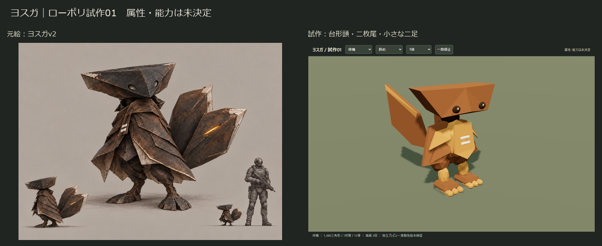
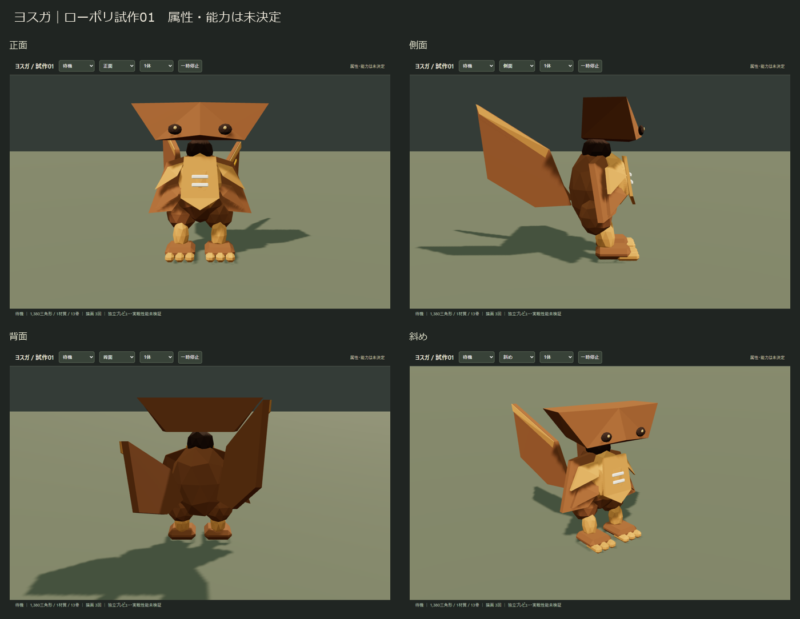
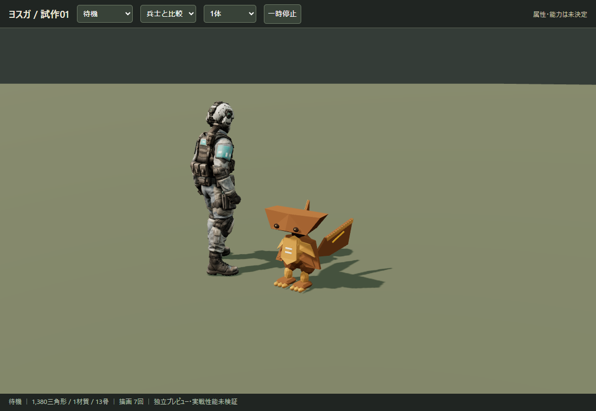
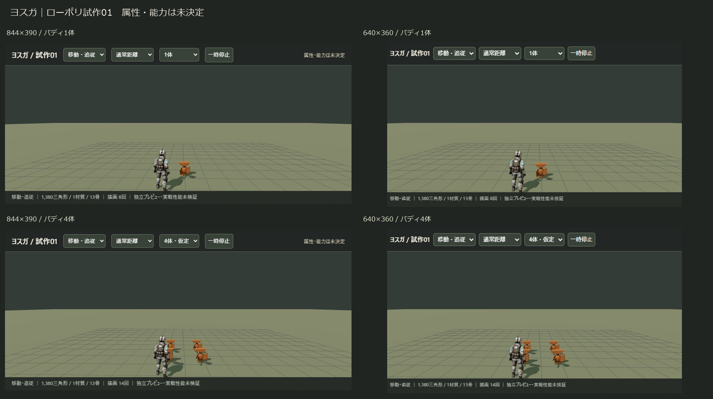

横長の台形頭、幅広い二枚の板尾、小さな二足を残しました。タタラの方向性を基準にした次の1体です。属性・能力は割り当てていません。
1,380三角形／1材質／13骨／テクスチャなし。編集用Blender・ゲーム用GLB・検証と引継ぎ

首をかしげて周囲を見る → 小刻みに歩く → 尾を開き構える → 側面。歩行はその場の動作で、追従経路・能力処理は含みません。



製品の画角・距離に準じた独立シーンです。4人各1体を仮定し、比較用に配置。実機・実戦性能は未検証で、白線だけの遠景識別は保証していません。